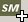

| Root icon
|
Leaf icon |
| To group together Edicts in a convenient package. |
| Create a new SubModel from the browser tree by clicking on  in the right-hand toolbar whenever it is visible. If an Edict or SubModelGroup object is selected in the tree, the new SubModel will be linked to it. |